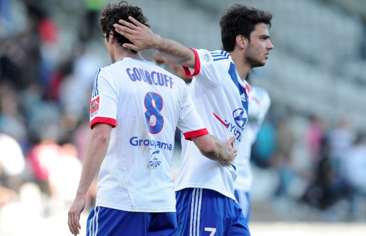

France - Lyon - Gourcuff - Scénarios
Quel avenir pour Yoann Gourcuff ?
Il y a quelques jours, Jean-Louis Gasset a conseillé à Yoann Gourcuff de partir de Lyon s'il veut retrouver l'Équipe de France. On a donc essayé d'imaginer où est-ce que l'ancien futur meilleur joueur français pourrait rebondir. Et ce qu'il pourrait y faire. 63



Gourcuff et Gourcuff
Il retourne vers ses racines, à Lorient
La lettre d'amour sort sur papier glacé dans les Inrocks en 2010 et elle sent bon la mer et le beurre salé. « Lorient, c’est ma ville. J’y suis né. J’y ai grandi. Mes parents, ma famille et mes amis y habitent toujours. J’y passe mes vacances. Lorient, c’est chez moi. Je suis fier d’être breton ». Oui, Yoann est le genre de type qui pourrait avoir l’autocollant « BZH » collé sur la vitre arrière de son Citroën Jumpy immatriculé 56. Du coup, c’est pendant ces vacances paisibles dans sa famille que Yoann gerbe son spleen à son paternel, entre deux bouchées de kouign-amann. « Papa, Lyon, je n’en peux plus. Tu me croiras jamais, mais là-bas, on croit que Ghezzal va devenir un super joueur. Tu sais, comme Tafer et Benzia. Sors-moi de là. Et puis bon, Gonalons, j’en ai marre de ses tacles. Mes chevilles sont lassées » balance le fiston. « Chéri, je vais faire mon possible. Mais tu sais, nous, on n’a pas beaucoup de sous. Je vais leur proposer Ecuele-Manga, c’est autre chose que Lovren. C'est tout ce que je peux faire. » Pas con et surtout très sensible lorsqu’il s’agit de régler ce genre d'affaire de cœur, JMA accepte. Gourcuff revient à Lorient, là même où il a commencé le football au haut niveau avant de rejoindre Rennes. Mais coincé entre Corgnet, Jouffre et Reale, Yoann ne voit pas plus la pelouse en plastique du Moustoir que celle du Gerland. Mais ça, il s’en fout. Il est en Bretagne, en famille, avec ses amis. Il ne lui reste plus qu’à trouver un nouveau lieu de villégiature estival.
Il tente un retour à Bordeaux
25 matches de Ligue 1 disputés en deux ans. C’est évidemment trop peu pour espérer retrouver le « vrai Gourcuff ». Mais en fait, si le problème était inverse ? Si le « vrai Gourcuff », c’était le Gourcuff actuel ? Une seule chance de le savoir : renvoyer Yoann là où l’on a vu celui que tous considèrent comme le vrai Gourcuff : à Bordeaux. Le 11 juillet 2013, jour de son 27e anniversaire, Yoann organise donc un goûter à Chaban-Delmas pour célébrer son retour. Marouane Chamakh est convié, en souvenir du bon vieux temps. Francis Gillot tente de lui redonner confiance, mais les premiers matches avec le maillot des Girondins ne sont guère convaincants. Il faut un déclic, Gillot le sait. Le 27 octobre, c’est le jour de Bordeaux-Lyon. Le coach invite au stade Franck Ribéry, Patrice Evra, Paolo Maldini, Carlo Ancelotti, Grégory Coupet : bref, tous les gens qui, de près ou de loin, ont critiqué le milieu de terrain français. L’idée : créer un électrochoc. Efficace ? Pas vraiment. Yoann apparaît tétanisé, et reste huit minutes immobile dans le rond central. Gillot décide de le sortir à la mi-temps, et de faire entrer à sa place Darbion, recruté pendant l’été. Découragé, Gourcuff décide de lui-même d’aller jouer en CFA. Là-bas, il retrouve ses anciens potes Planus et Tremoulinas, qui en avaient marre de la Ligue 1. En CFA, Gourcuff marque 3 buts, dont une tête, mais se blesse lors d’un contact avec Gameiro, attaquant de la CFA du PSG. A la fin de la saison, il décide de rejoindre l’Equipe21 en tant que maquilleur.
Non, en fait, il tente un retour à Milan
Depuis son passage à Milan, Yoann Gourcuff a bien changé. Depuis le passage de Yoann Gourcuff, le Milan a bien changé. Autrefois terre de classe, de costards bien coupés et de cheveux soigneusement plaqués au-dessus du crâne, Milanello s’est transformé en Palavas-les-Flots du mois d’août. Des lascars avec des crêtes, un short de bain à fleurs avec un boxer Dolce&Gabbana en dessous, et le maillot du Milan A.C sur les épaules. Maldini parti, et ses remarques du genre « Il ne s’est pas montré intelligent/il s’est passé beaucoup de choses, il sait très bien ce qu’il a fait » avec lui, Yoann peut faire son grand retour en rouge et noir. « Papa, je sais que c’est risqué, mais bon. Le Milan reste un grand club, et Flamini joue bien quelques bouts de matchs avec son pois chiche à la place du cerveau. Et puis Muntari, papa. Muntari, quoi. » Grand seigneur, Silvio Berlusconi décidé de refaire confiance à Gourcuff. Il faut dire que les Italiens ont réussi à lui refaire confiance, à lui, et que ça, ça donne des envies de grand pardon. Arrivé à Milano Centrale, Gourcuff loue une Citroën Saxo et se gare à côté de la Bentley de Mario Balotelli. Gourcuff se fait une crête et se met à traîner avec El Sharaawy, Balotelli et Niang. Le Blanc de la bande. Celui qui se fait engrainer. Celui qui est le meilleur sur la pelouse aussi. Loin de son Stade Rennais formateur, Yoann termine comme Julien Féret. A Milan. Pas si mal.
Il signe en D2, chez le promu Le Poiré-sur-Vie
On l’a compris : Yoann Gourcuff a du talent dans les pieds, mais pas grand-chose dans le mental. Le milieu de terrain ne supporte pas la pression, les projecteurs, la surexposition. Du coup, il se dit que pour retrouver un niveau honorable et une condition physique supérieure à celle d’un retraité, il lui faut de la tranquillité. Le 12 juillet 2103, il célèbre les 15 ans de la victoire des Bleus en Coupe du Monde en s’engageant avec Le Poiré-sur-Vie, tout juste promu en deuxième division. Yoann découvre ainsi le Stade de l'Idonnière, ses 4500 supporters en folie, et l’entraîneur, Oswald Tanchot. Là-bas, Yoann peut enfin travailler en paix, et devient rapidement pote avec Vincent Le Goff. Questions d’affinités bretonnes. Lorsqu’il n’a pas match ni entraînement, il peut aller profiter d’une petite balade sur la plage de Noirmoutier, à quelques kilomètres de là. Bien dans ses baskets, le joueur retrouve ses sensations sur la pelouse. Il claque un doublé sur la pelouse de Troyes, puis marque le but décisif du choc face à Auxerre. Il termine la saison à 15 buts, 11 passes décisives, et seulement une blessure. Le PSG, qui cherche un joueur français, lui fait les yeux doux. Mais Yoann refuse. Au mieux, il acceptera à Châteauroux. Au mieux, hein.
Il poursuit une carrière de Professeur d’élocution
240 minutes disputées depuis le début de l’année 2013 : Yoann Gourcuff joue plutôt aux abonnés absents ces derniers temps. En réalité, on a compris pourquoi. Depuis un an, le joueur, toujours apprécié pour ses analyses d’après-match, a décidé de donner des cours d’élocution aux joueurs de foot. Des cours où il enseigne aux pensionnaires de Ligue 1 le b.a.-ba de l’après-match. Premier cours : on proscrit pour toujours les formules toutes faites : « L’important, c’était les trois points », « On prend les matches les uns après les autres », « On n’a pas réussi à mettre les occasions au fond », etc… Les cours sont un franc succès, et l’ancien Bordelais est même obligé de donner des cours du soir, notamment pour son élève le plus motivé, un certain Jérémy M. Se sentant plus valorisé dans le costume de prof, il embrasse définitivement cette carrière, et lance l’école : « Dis-le autrement ». Taye Taiwo rate le concours d’entrée, mais est en revanche accepté dans une école où l’on apprend à faire des doublages de cartoons. En 2018, à quelques mois de la Coupe du Monde en Russie, Gourcuff sort un ouvrage, « Comment j’ai appris à Franck Ribéry à parler en français ». 150 000 exemplaires vendus. Et Bernard Pivot qui pense déjà à une future collaboration. Reconversion réussie.
Il se lance définitivement dans le tennis
« Cette fois, c’est trop. Marre de ces tocards ». Yoann, drapeau de la France sur les épaules, s’essuie une dernière larme, vide sa poubelle pleine de mouchoirs et prend son courage à deux mains. « Putain de chèvre de Gilles Simon, même pas foutu de battre un Argentin » marmonne-t-il dans son duvet, raquette Wilson "édition Sampras" dans la main. Déçu par la nouvelle défaite de l’équipe de France en Coupe Davis, le Breton décide de renouer avec son premier amour : la balle jaune. Classé 15/3 à 12 ans, l’ancien champion de tennis du Morbihan a même disputé l’Open Super 12 d’Auray, un gros tournoi dans les catégories de jeunes, notamment remporté par Rafael Nadal. Il a perdu au premier tour. Lassé par le ballon rond et très triste à Lyon depuis qu’il ne peut plus taper quelques balles avec Hugo Lloris, l’autre enfant des écoles de tennis, Yoann décide de tout plaquer et de se lancer dans une carrière de tennisman professionnel. Aussi soyeux que sa frappe de balle sur coup-franc, son toucher en coup droit lui permet de se hisser rapidement dans le top 10 des joueurs français. Mais à la veille de sa première sélection par Arnaud Clément, un scandale éclate. Chahuté par Jo-Wilfried Tsonga et Michael Llodra, Gourcuff, soupçonné d’être la taupe du vestiaire de l’équipe de France de tennis, quitte la sélection la tête basse. Cette fois, c’est décidé, il va se mettre au vélo. Le circuit de Plouay, le mur de Bretagne. Ça, ça lui parle.
La lettre d'amour sort sur papier glacé dans les Inrocks en 2010 et elle sent bon la mer et le beurre salé. « Lorient, c’est ma ville. J’y suis né. J’y ai grandi. Mes parents, ma famille et mes amis y habitent toujours. J’y passe mes vacances. Lorient, c’est chez moi. Je suis fier d’être breton ». Oui, Yoann est le genre de type qui pourrait avoir l’autocollant « BZH » collé sur la vitre arrière de son Citroën Jumpy immatriculé 56. Du coup, c’est pendant ces vacances paisibles dans sa famille que Yoann gerbe son spleen à son paternel, entre deux bouchées de kouign-amann. « Papa, Lyon, je n’en peux plus. Tu me croiras jamais, mais là-bas, on croit que Ghezzal va devenir un super joueur. Tu sais, comme Tafer et Benzia. Sors-moi de là. Et puis bon, Gonalons, j’en ai marre de ses tacles. Mes chevilles sont lassées » balance le fiston. « Chéri, je vais faire mon possible. Mais tu sais, nous, on n’a pas beaucoup de sous. Je vais leur proposer Ecuele-Manga, c’est autre chose que Lovren. C'est tout ce que je peux faire. » Pas con et surtout très sensible lorsqu’il s’agit de régler ce genre d'affaire de cœur, JMA accepte. Gourcuff revient à Lorient, là même où il a commencé le football au haut niveau avant de rejoindre Rennes. Mais coincé entre Corgnet, Jouffre et Reale, Yoann ne voit pas plus la pelouse en plastique du Moustoir que celle du Gerland. Mais ça, il s’en fout. Il est en Bretagne, en famille, avec ses amis. Il ne lui reste plus qu’à trouver un nouveau lieu de villégiature estival.
Il tente un retour à Bordeaux
Non, en fait, il tente un retour à Milan
Depuis son passage à Milan, Yoann Gourcuff a bien changé. Depuis le passage de Yoann Gourcuff, le Milan a bien changé. Autrefois terre de classe, de costards bien coupés et de cheveux soigneusement plaqués au-dessus du crâne, Milanello s’est transformé en Palavas-les-Flots du mois d’août. Des lascars avec des crêtes, un short de bain à fleurs avec un boxer Dolce&Gabbana en dessous, et le maillot du Milan A.C sur les épaules. Maldini parti, et ses remarques du genre « Il ne s’est pas montré intelligent/il s’est passé beaucoup de choses, il sait très bien ce qu’il a fait » avec lui, Yoann peut faire son grand retour en rouge et noir. « Papa, je sais que c’est risqué, mais bon. Le Milan reste un grand club, et Flamini joue bien quelques bouts de matchs avec son pois chiche à la place du cerveau. Et puis Muntari, papa. Muntari, quoi. » Grand seigneur, Silvio Berlusconi décidé de refaire confiance à Gourcuff. Il faut dire que les Italiens ont réussi à lui refaire confiance, à lui, et que ça, ça donne des envies de grand pardon. Arrivé à Milano Centrale, Gourcuff loue une Citroën Saxo et se gare à côté de la Bentley de Mario Balotelli. Gourcuff se fait une crête et se met à traîner avec El Sharaawy, Balotelli et Niang. Le Blanc de la bande. Celui qui se fait engrainer. Celui qui est le meilleur sur la pelouse aussi. Loin de son Stade Rennais formateur, Yoann termine comme Julien Féret. A Milan. Pas si mal.
Il signe en D2, chez le promu Le Poiré-sur-Vie
On l’a compris : Yoann Gourcuff a du talent dans les pieds, mais pas grand-chose dans le mental. Le milieu de terrain ne supporte pas la pression, les projecteurs, la surexposition. Du coup, il se dit que pour retrouver un niveau honorable et une condition physique supérieure à celle d’un retraité, il lui faut de la tranquillité. Le 12 juillet 2103, il célèbre les 15 ans de la victoire des Bleus en Coupe du Monde en s’engageant avec Le Poiré-sur-Vie, tout juste promu en deuxième division. Yoann découvre ainsi le Stade de l'Idonnière, ses 4500 supporters en folie, et l’entraîneur, Oswald Tanchot. Là-bas, Yoann peut enfin travailler en paix, et devient rapidement pote avec Vincent Le Goff. Questions d’affinités bretonnes. Lorsqu’il n’a pas match ni entraînement, il peut aller profiter d’une petite balade sur la plage de Noirmoutier, à quelques kilomètres de là. Bien dans ses baskets, le joueur retrouve ses sensations sur la pelouse. Il claque un doublé sur la pelouse de Troyes, puis marque le but décisif du choc face à Auxerre. Il termine la saison à 15 buts, 11 passes décisives, et seulement une blessure. Le PSG, qui cherche un joueur français, lui fait les yeux doux. Mais Yoann refuse. Au mieux, il acceptera à Châteauroux. Au mieux, hein.
Il poursuit une carrière de Professeur d’élocution
240 minutes disputées depuis le début de l’année 2013 : Yoann Gourcuff joue plutôt aux abonnés absents ces derniers temps. En réalité, on a compris pourquoi. Depuis un an, le joueur, toujours apprécié pour ses analyses d’après-match, a décidé de donner des cours d’élocution aux joueurs de foot. Des cours où il enseigne aux pensionnaires de Ligue 1 le b.a.-ba de l’après-match. Premier cours : on proscrit pour toujours les formules toutes faites : « L’important, c’était les trois points », « On prend les matches les uns après les autres », « On n’a pas réussi à mettre les occasions au fond », etc… Les cours sont un franc succès, et l’ancien Bordelais est même obligé de donner des cours du soir, notamment pour son élève le plus motivé, un certain Jérémy M. Se sentant plus valorisé dans le costume de prof, il embrasse définitivement cette carrière, et lance l’école : « Dis-le autrement ». Taye Taiwo rate le concours d’entrée, mais est en revanche accepté dans une école où l’on apprend à faire des doublages de cartoons. En 2018, à quelques mois de la Coupe du Monde en Russie, Gourcuff sort un ouvrage, « Comment j’ai appris à Franck Ribéry à parler en français ». 150 000 exemplaires vendus. Et Bernard Pivot qui pense déjà à une future collaboration. Reconversion réussie.
Il se lance définitivement dans le tennis
« Cette fois, c’est trop. Marre de ces tocards ». Yoann, drapeau de la France sur les épaules, s’essuie une dernière larme, vide sa poubelle pleine de mouchoirs et prend son courage à deux mains. « Putain de chèvre de Gilles Simon, même pas foutu de battre un Argentin » marmonne-t-il dans son duvet, raquette Wilson "édition Sampras" dans la main. Déçu par la nouvelle défaite de l’équipe de France en Coupe Davis, le Breton décide de renouer avec son premier amour : la balle jaune. Classé 15/3 à 12 ans, l’ancien champion de tennis du Morbihan a même disputé l’Open Super 12 d’Auray, un gros tournoi dans les catégories de jeunes, notamment remporté par Rafael Nadal. Il a perdu au premier tour. Lassé par le ballon rond et très triste à Lyon depuis qu’il ne peut plus taper quelques balles avec Hugo Lloris, l’autre enfant des écoles de tennis, Yoann décide de tout plaquer et de se lancer dans une carrière de tennisman professionnel. Aussi soyeux que sa frappe de balle sur coup-franc, son toucher en coup droit lui permet de se hisser rapidement dans le top 10 des joueurs français. Mais à la veille de sa première sélection par Arnaud Clément, un scandale éclate. Chahuté par Jo-Wilfried Tsonga et Michael Llodra, Gourcuff, soupçonné d’être la taupe du vestiaire de l’équipe de France de tennis, quitte la sélection la tête basse. Cette fois, c’est décidé, il va se mettre au vélo. Le circuit de Plouay, le mur de Bretagne. Ça, ça lui parle.
Eric Maggiori et Swann Borsellino
Revivez Arsenal - Everton 0-0 La vie de Brian
Ca va etre difficile pour lui de trouver un point de chute, aucun club au monde ne voudra payer son salaire de 5ME
Reste plus qu'a attendre la fin de son contrat dans 2 ans et demi
Se moquer de lui, ok parcequ'il est fragile, a decu l'opinion footbalistique francaise.
en pleine possession de ses moyens, techniquement il est au dessus, peut faire la difference, sauf que on sait bien que beaucoup de joueurs de ligue 1 prennent un malin plaisir a le deboiter sur le terrain, parcequ'il y'a de la jalousie sur son "intellect", les rumeurs qu'il est gay, il a souffert d'une mentalité exécrable a son encontre par la ligue 1 en général.
Alors qui est le fautif ? je pense que la france du foot a tué gourcuff dans l'oeuf, j'appelle ca du sado-masochisme.
Il pourrait faire le classement des muscles du corps qui font le plus souffrir quand on les utilise, ou alors le 11 ultime des joueurs qu'il aurait aimé fréquenter à l'infirmerie ou sur le divan du psy.
Bientôt, Gourcuff & Diaby formeront une ------ de doublette au milieu de l'EDF. Un jour. Peut être.
Bon, je vais rallumer PES 11...
ahaha... me suis fay doublay :/
Oui, c'était ma minute tennis.
Bientôt, Gourcuff & Diaby formeront une ------ de doublette au milieu de l'EDF. Un jour. Peut être.
Bon, je vais rallumer PES 11...
Berk PES 2011, le premier qui m'a vraiment dégouté. Bien éaulé par la suie par un PES 2012 encore pire...
Sinon, moi qui me suit arrêté en 2010 pour les jeux vidéos, Gourcuff sur PES et Diaby sur Fifa c'est très très lourd ;)
Rien à redire, méchamment efficace !
Pour Gourcuff, je vais pas dire que cela me laisse de marbre, mais ça fait plus de 3 ans qu'on attend plus rien de ce joueur... Et encore un à qui la liquette "futur ZZ" fut trop grande...
Gourcuff joue tête baissé, aime toucher le ballon, le faire tourner, a une bonne conservation de balle, a un gros coffre.
Grenier joue tête levée, joue simple et direct, il cherche souvent (trop?) la passe décisive, résiste peu au contact bien qu'endurant.
Je vais jouer la grosse côte : et si Gourcuff restait à Lyon?
Jérémy Menez ? Jérémy Morel ?! Jérémy Mathieu ? Jérémy Michalak ?!? Que de suspens
Je crois en un possible retour, à l'image d'un Toulalan, il doit partir à l'étranger. La rupture avec la France ne se résoudra jamais à part si il claque 3 doublés d'affilés en Ligue 1 et amène Lyon à la 2nd place.
Toulalan a toujours été, au même tire que Gourcuff, mal jugé et dénigré, alors que c'était le meilleur joueur du championnat à son poste et je peux vous dire que le taff qu'il faisait à Lyon était essentiel à l'équipe. Mais après la CDM une rupture s'est creusé et il a du partir à l'étranger pour retrouver du plaisir, plaisir de vivre et de pratiquer son métier avec confiance et sérénité, ce que Gourcuff doit retrouver. Gourcuff doit partir dans un club où ses qualités seront les plus mises en valeur, l'Espagne et des clubs comme Malaga, Valence, Atlético ou Séville me paraissent évidents, la Bundesliga peut aussi lui convenir.
Bref j'espère que cet été il réussira à partir, pour lui, pour les finances lyonnaises, et pour son talent qui mérite de retrouver la flamme.
Enormissime, collector!!!
Je crois en un possible retour, à l'image d'un Toulalan, il doit partir à l'étranger. La rupture avec la France ne se résoudra jamais à part si il claque 3 doublés d'affilés en Ligue 1 et amène Lyon à la 2nd place.
Toulalan a toujours été, au même tire que Gourcuff, mal jugé et dénigré, alors que c'était le meilleur joueur du championnat à son poste et je peux vous dire que le taff qu'il faisait à Lyon était essentiel à l'équipe. Mais après la CDM une rupture s'est creusé et il a du partir à l'étranger pour retrouver du plaisir, plaisir de vivre et de pratiquer son métier avec confiance et sérénité, ce que Gourcuff doit retrouver. Gourcuff doit partir dans un club où ses qualités seront les plus mises en valeur, l'Espagne et des clubs comme Malaga, Valence, Atlético ou Séville me paraissent évidents, la Bundesliga peut aussi lui convenir.
Bref j'espère que cet été il réussira à partir, pour lui, pour les finances lyonnaises, et pour son talent qui mérite de retrouver la flamme.
Enfin, 20 matchs en 2 ans pour un mec qui coute sur tout son contrat 70 millions à son club, on a le droit de dire que c'est léger, non?
Perso, sur les 2 dernières années, je n'ai vu aucun "très bon match" de Yohann...
En revanche, entièrement d'accord avec le parallèle avec Toulalan.
Je crois en un possible retour, à l'image d'un Toulalan, il doit partir à l'étranger. La rupture avec la France ne se résoudra jamais à part si il claque 3 doublés d'affilés en Ligue 1 et amène Lyon à la 2nd place.
Toulalan a toujours été, au même tire que Gourcuff, mal jugé et dénigré, alors que c'était le meilleur joueur du championnat à son poste et je peux vous dire que le taff qu'il faisait à Lyon était essentiel à l'équipe. Mais après la CDM une rupture s'est creusé et il a du partir à l'étranger pour retrouver du plaisir, plaisir de vivre et de pratiquer son métier avec confiance et sérénité, ce que Gourcuff doit retrouver. Gourcuff doit partir dans un club où ses qualités seront les plus mises en valeur, l'Espagne et des clubs comme Malaga, Valence, Atlético ou Séville me paraissent évidents, la Bundesliga peut aussi lui convenir.
Bref j'espère que cet été il réussira à partir, pour lui, pour les finances lyonnaises, et pour son talent qui mérite de retrouver la flamme.
mais est ce que ces clubs voudraient de lui? dans l'état actuel des choses je ne pense pas, en plus de ça vlà le salaire...
ça marche pas, c'est tout, et ça ne marchera jamais, trop de passif.
constat d'échec, tout le monde s'est planté sur coup, l'OL comme Gourcuff
on se sert la main et on passe à autre chose
il pourrait faire de la pub pour du mascara, tiens !
Perso, sur les 2 dernières années, je n'ai vu aucun "très bon match" de Yohann...
En revanche, entièrement d'accord avec le parallèle avec Toulalan.
Tu n'as vu aucun très bon match car tu juge "YOANN GOURCUFF" et pas un autre joueur, comme j'ai dis avant ce mec est pas jugé de manière objective car on attend de lui des matchs à la Ozil ou à la Zizou, chose qu'on verra évidemment jamais. Mias des très bon matchs il en a fait, peu certes, mais il y en avait. Après je suis absolument d'accord, son bilan à Lyon est faible et largement insufisant.
je trouve que ca résume tout... mais plus le temps passe, plus la réponse apparait claire... Bordeaux/Gourcuff, ca remonte a loin maintenant..
Sinon, si Grenier se met à foutre le maillot de Gourcuff, je pense que y a personne qui se rendrait compte de la fourberie tant les 2 se ressemblent sur tous les points de vue
Ca va etre difficile pour lui de trouver un point de chute, aucun club au monde ne voudra payer son salaire de 5ME
Reste plus qu'a attendre la fin de son contrat dans 2 ans et demi
Comme tu le dis, lui-même sait que son niveau est pas terrible en ce moment. Le problème sera juste le montant demandé par Aulas, qui ne devrait pas être très élevé d'ailleurs, justement pour s'éviter le versement de ce salaire.
Le salaire, n'est pas un problème pour son futur club : Gourcuff n'exigera jamais 5M, il acceptera 5 fois moins pour jouer dans un club "correct" qui le relancerait.
En plus de ça Aulas a voulu en faire le Beckham français, ils ont même déposé une marque pour des lignes de vêtements "YG29" (dont on entend plus parler d'ailleurs).
bref, c'est le fiasco total.
du gros caca OL' style
Ceci étant dit, je ne me régale pas autant cette année que l'an passé, où Diego régalait le chico au milieu et était à la baguette de beaucoup d'actions. Il manque un p*tain d'esthète de la boule au milieu, et moi Gourcuff, avec les bonhommes qu'il aurait autour de lui (même sans Falcao, qui sera remplacé), jouant la LdC, j'en veux bien!
je trouve que ca résume tout... mais plus le temps passe, plus la réponse apparait claire... Bordeaux/Gourcuff, ca remonte a loin maintenant..
Il ne fallait pas écrire Larqué, ça pique les yeux.
Mais qu'est-ce qu'il fout depuis 3 ans???
Après quand on me dit que son gros salaire est un probleme pour trouver un club je répondrai que si il est pas stupide il acceptera volontier une forte diminution sur sa fiche de paie.
Tant pis pour Lyon si il lui avait proposé un contrat à la con*!
ça marche pas, c'est tout, et ça ne marchera jamais, trop de passif.
constat d'échec, tout le monde s'est planté sur coup, l'OL comme Gourcuff
on se sert la main et on passe à autre chose
il pourrait faire de la pub pour du mascara, tiens !
...j'ai lu "trop passif"...désolé...et ça m'a fait marrer...désolé (bis).
Je trouve très ambitieux de songer à des clubs tels que Valence, Atletico... On est dans le fantasme de l'ancien Gourcuff, là. Ces clubs sont au moins au niveau de Lyon. Avec sa forme actuelle, il n'y a aucune raison qu'il ne vive pas une saison sur le banc.
Redescendre d'un cran semble inéluctable. Et le salaire n'est évidemment pas un obstacle : qui peut croire qu'il va exiger un gros salaire au détriment d'un temps de jeu ? Il semble plus être dans une mentalité de joueur qui veut d'abord jouer.
Ce serait plus du milieu de tableau allemand, espagnol ou français avec des objectifs de ligue europa qui l'attendent. Avec des titularisations régulières pour lui redonner confiance. Le club ne le mettra pas sous pression, ce ne serait pas dans l'intérêt du club qui aura misé sur son retour en forme.
A quand un retour sur l'equipe.fr les enfants...
Ah, m*rde, le poste est pris par Karine Ferri.
...j'ai lu "trop passif"...désolé...et ça m'a fait marrer...désolé (bis).
haha, en effet, ça marche aussi dans ce sens là (oups)